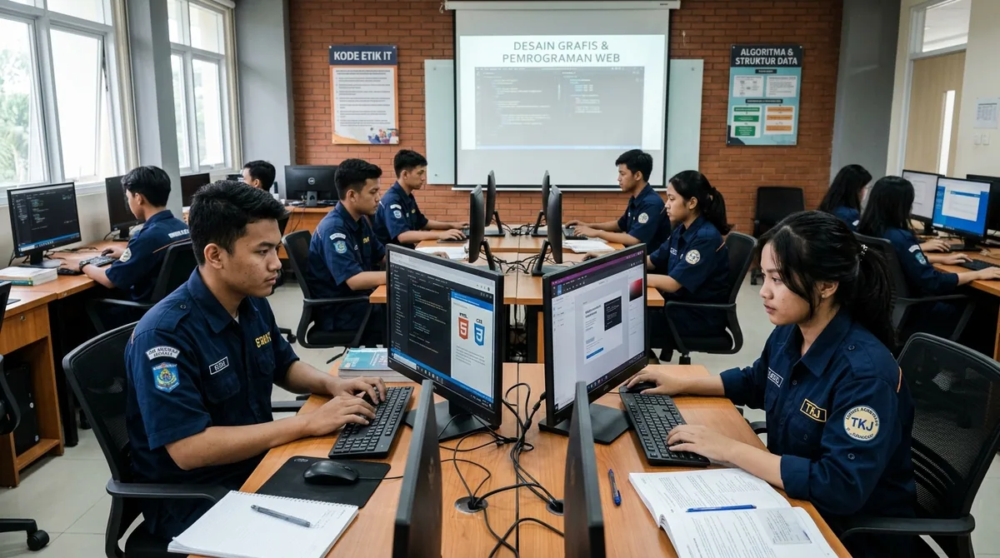

Mentoring Intensif
Bimbingan rutin dari mentor praktisi untuk pengarahan tugas dan solusi kendala teknis.
Program pengembangan skill teknis dan etika kerja profesional khusus bagi siswa SMK kelas XI dan XII.
Program ini dirancang khusus untuk memenuhi kebutuhan siswa SMK yang ingin mempraktikkan teori sekolah ke dalam proyek riil. Didampingi oleh mentor yang berpengalaman, siswa akan ditempa agar memiliki hasil karya portofolio yang dapat diandalkan.
Setiap aktivitas dalam program ini dirancang secara sistematis agar peserta tidak merasa kebingungan. Dengan dukungan pengawasan mentor dan evaluasi berkala, peserta dapat meningkatkan kualitas diri secara signifikan.

Berbagai dukungan untuk memastikan pengalaman magang berjalan lancar dan bermanfaat.
Bimbingan rutin dari mentor praktisi untuk pengarahan tugas dan solusi kendala teknis.
Mengerjakan studi kasus proyek asli sesuai kebutuhan industri digital.
Hasil tugas disesuaikan agar bisa dimasukkan sebagai portofolio profesional.
Mendapatkan sertifikat resmi pengerjaan magang untuk lampiran kelulusan/lamaran.
Proses bertahap dari awal pendaftaran hingga penyerahan sertifikat.
Daftar sekarang juga untuk mengamankan posisi Anda dalam kuota periode magang berikutnya.